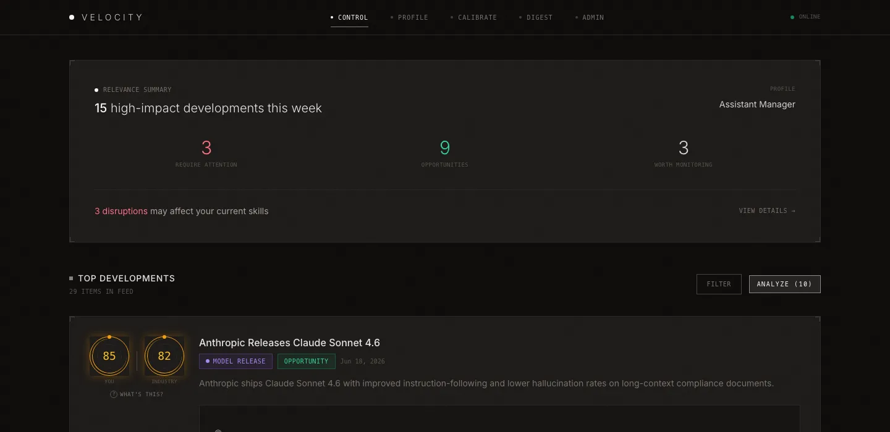
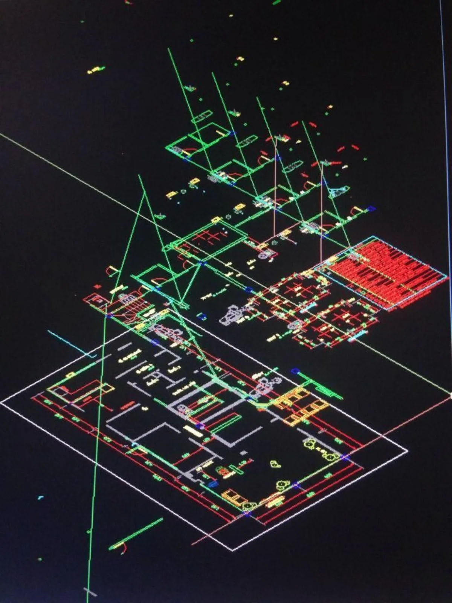
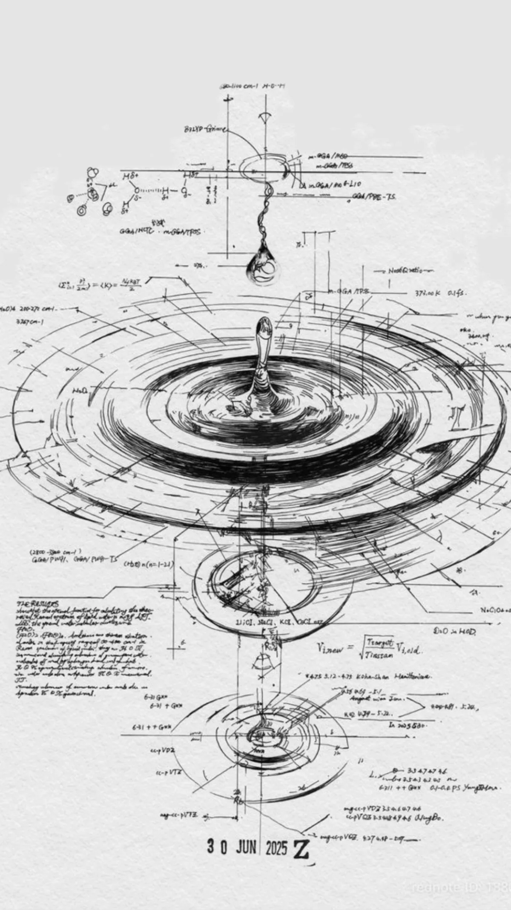
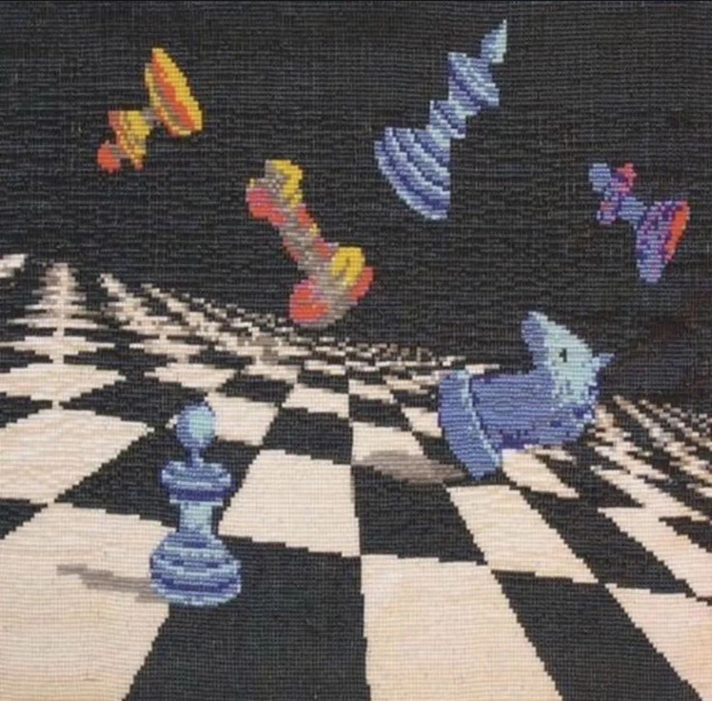
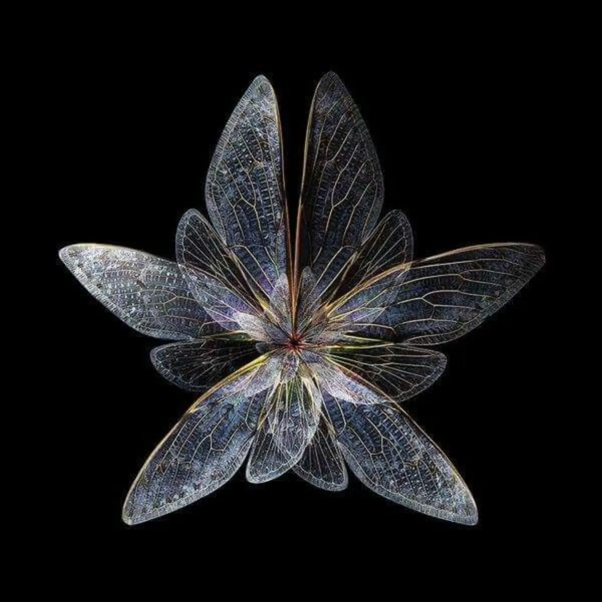

Assistant Manager, Cyber Strategy & Governance at KPMG Bangalore. Four-plus years across GRC, third-party risk, and ISO audits — with a parallel practice building compliance and audit-adjacent software.
Four years of auditing controls showed me exactly where systems break.
The builder instinct wanted to fix them at the source — not file another observation.
So now I do both: governance advisory by day, and tools that close the gaps I keep finding.
Client names stay confidential. These are the practice lines I run engagements in — what the work is, and how it lands.
Vendor risk programs designed end to end — risk-based tiering, ISO 27001 and NIST CSF-mapped assessment questionnaires, evidence review, and continuous monitoring workflows that standardize how third parties are assessed and tracked.
ISMS, privacy, and business continuity programs taken from gap analysis through control design, evidence collection, and zero-defect external certification audits — on both the implementation and the audit side of the table.
Enterprise-wide gap assessments against NIST CSF and industry benchmarks, translated into phased security enhancement roadmaps across policy, technology, and operations — with progress reporting boards actually read.
Business continuity management systems built and audited to ISO 22301 — business impact analysis, continuity strategy, and testing cadences that hold up in real disruptions, not just in the binder.
Technology and IT risk assessments, compliance reviews against RBI directions, NIST CSF, OWASP Top 10 and PCI DSS, and remediation tracking that closes the loop — findings translated into fixes engineering teams adopt.
A compliance audit platform that reads the evidence before it asks a question. Six frameworks — DPDPA, ISO 27001, GDPR, HIPAA, NIST CSF, PCI-DSS — assessed in one pass, with deterministic scoring: the model writes, code decides.
A vendor security screen that checks public signals before you open the door. Six scanners run against a domain concurrently — DNS, SSL/TLS, tech stack, breach exposure, headers — with a hard-rules verdict before any AI interpretation. One domain, 60 seconds.
Experiments in what happens when a system learns from rules alone. A snake that taught itself to survive, a landing sequence learned from scratch, and a prisoner's dilemma you can play — watch cooperation emerge or collapse over thousands of iterations.
An AI news tracker that scores developments against your own profile. Each item is classified as an opportunity, a disruption, or a knowledge gap — relative to what you actually do — and lands in a weekly digest via an automated ingestion pipeline.

Fifteen articles for security and GRC practitioners. The recurring thesis: this is not IT security for AI tools — it is systems security for synthetic cognition.
AI agents now have inboxes, credentials, and production access. Most security programs are designed for a pre-LLM threat landscape.
Read on LinkedIn
AI-generated production code, persistent agents, and inverted economics now favor the attacker. Human-speed security can't keep the pace.
Read on LinkedInAutonomous task complexity is doubling roughly every 89 days. Most security programs are still scoped against a pace that no longer exists.
Read on LinkedIn
A single pip install exfiltrated SSH keys, cloud credentials, and crypto wallets through a transitive dependency three layers deep.
Read on LinkedIn
Every AI session starts from zero. The fix is not a smarter model — it is giving the model a memory system that compounds.
Read on LinkedIn
Claude found thousands of zero-days across major operating systems and browsers, including a 16-year-old bug automated tools had missed five million times.
Read on LinkedIn